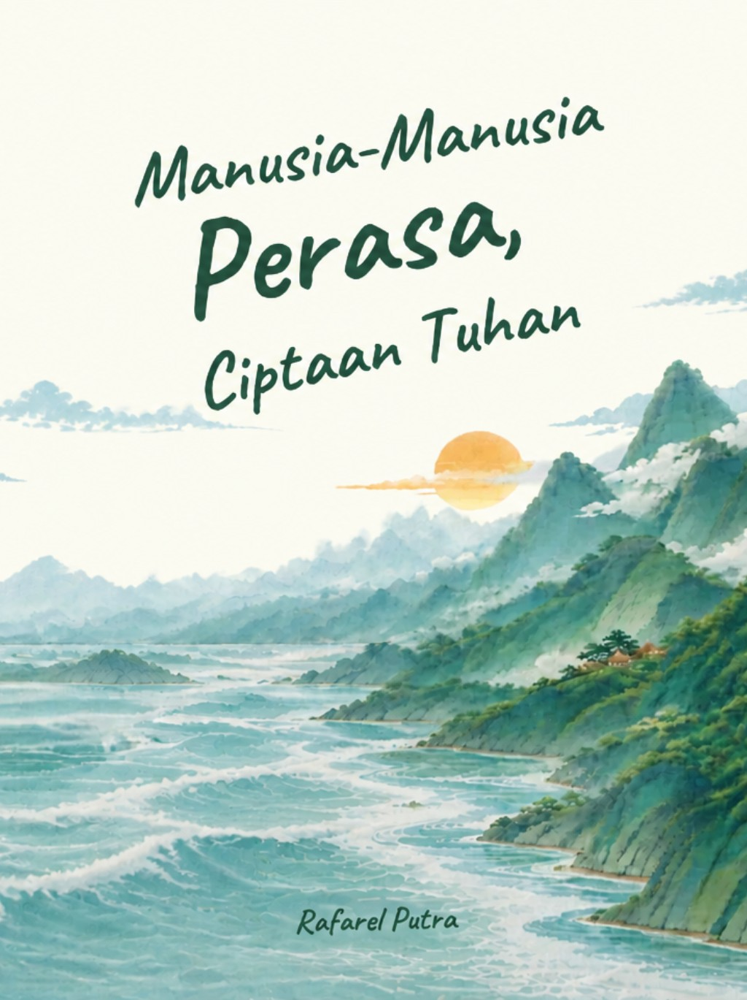

Manusia-Manusia Perasa, Ciptaan Tuhan
Tentang manusia yang tak pernah selesai memahami dirinya sendiri. Tentang luka yang mengajarkan, bahagia yang terkadang terlupa, dan segala rasa yang membuat kita bertanya, mengapa Tuhan menghadirkan begitu banyak perasaan dalam kehidupan?

Barangkali, dengan memahami setiap rasa yang singgah, manusia perlahan belajar memahami arti kehidupan.
Di antara rasa dan makna.
Fiksa Ganistha ingin memahami satu hal. Yaitu, mengapa Tuhan menciptakan begitu banyak perasaan, jika manusia sendiri terkadang kesulitan memahami apa yang sedang dirasakannya?
Bagaimana tidak? Ada begitu banyak rasa yang datang silih berganti, meninggalkan cerita yang berbeda-beda. Ada yang membuatnya bahagia, ada yang mengajarkannya tentang kehilangan, dan ada pula yang membuatnya bertanya-tanya tentang alasan di balik semua yang terjadi.
Namun, semakin jauh ia mencoba memahami rasa sakit yang selama ini memenuhi pikirannya, semakin ia menyadari bahwa ada banyak kebahagiaan yang luput dari pandangannya. Barangkali, ia terlalu sibuk mencari alasan di balik luka, sampai lupa memperhatikan hal-hal sederhana yang diam-diam membuat hidupnya berharga.
Melalui pertemuan, pengalaman, dan segala kejadian yang tak pernah ia duga, Fiksa perlahan belajar mengenali dirinya sendiri. Sebab, semakin banyak rasa yang ia temui, semakin banyak pula hal yang harus ia pahami.
Pada akhirnya, ia mulai mengerti bahwa mungkin Tuhan tidak menciptakan perasaan untuk selalu dimengerti manusia, melainkan agar manusia belajar mengenal kehidupan melalui setiap rasa yang pernah singgah di dalam dirinya.
Manusia, dengan segala rasanya.
Tiga ruang perjalanan, tempat manusia mengenal berbagai rasa, menemukan cerita, dan perlahan memahami arti kehidupan.
Mengenali Diri
Terkadang, memahami apa yang dirasakan sendiri jauh lebih sulit daripada memahami perasaan orang lain. Ada begitu banyak rasa yang singgah, tetapi tak semuanya mampu kita beri nama.
Menerima Kehidupan
Kehidupan tidak hanya menghadirkan hal-hal yang ingin kita kenang. Ada pertemuan yang berakhir menjadi kenangan, ada harapan yang tak menemukan jalannya, dan ada kenyataan yang harus diterima meski tak pernah kita inginkan.
Mencari Makna
Semakin jauh manusia mencari jawaban, semakin banyak pula pertanyaan yang ditemukannya. Mengapa sebuah perasaan hadir, apa yang ingin disampaikannya, dan untuk apa semua itu menjadi bagian dari kehidupan?
Fiksa Ganistha
Fiksa Ganistha adalah seseorang yang mencoba memahami dunia melalui perasaan. Ada begitu banyak hal yang ingin ia mengerti, terutama tentang mengapa Tuhan menciptakan manusia dengan kemampuan untuk merasakan begitu banyak hal, jika tidak semuanya dapat dipahami dengan mudah.
Baginya, setiap perasaan menyimpan ceritanya sendiri. Ada yang datang membawa kebahagiaan, ada yang meninggalkan pertanyaan, dan ada pula yang membuatnya memandang kehidupan dari sisi yang berbeda.
Namun, perjalanan Fiksa bukan tentang mencari cara agar ia tak lagi merasakan apa-apa. Sebab, semakin jauh ia mencoba memahami perasaannya, semakin ia menyadari bahwa menjadi manusia berarti belajar menerima segala rasa yang hadir, bahkan ketika ia belum menemukan alasan di baliknya.
Baca Cerita
Setiap halaman menyimpan rasa, setiap cerita menyimpan makna. Barangkali, ada perasaan yang pernah kau kenali di antara kisah Fiksa. Mari menyelami perjalanannya dan temukan apa yang mungkin selama ini luput dari pemahamanmu.